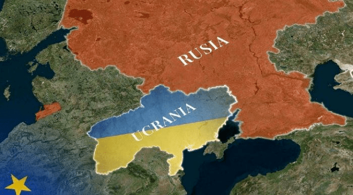

Mucho se ha hablado en las últimas horas respecto al tema y han salido cientos de miles de personas a dar sus puntos de vista a través de foros o redes sociales como Twitter o Facebook, pero son muy pocos los usuarios que realmente saben lo que está ocurriendo en Europa oriental más específicamente en Rusia y Ucrania, generando mal información y dudas dentro de nuestra sociedad.
Este Bloc cumple la función de dar una información general del porque todo esto esta ocurriendo además de contar con un punto de vista personal de su autor.

Suscribete y dale like